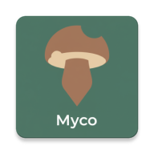

Stima Crescita Funghi Porcini
Digita una località o usa la tua posizione, poi clicca sulla mappa.
Clicca sulla mappa per selezionare il punto esatto da analizzare.
Risultati per il punto selezionato
Analisi in parole semplici
Nota bene: Questa è una stima algoritmica. La crescita fungina è un fenomeno biologico complesso. Usa queste informazioni come un indicatore e non come una certezza.
Oops! Non è stato possibile recuperare i dati. Riprova più tardi.